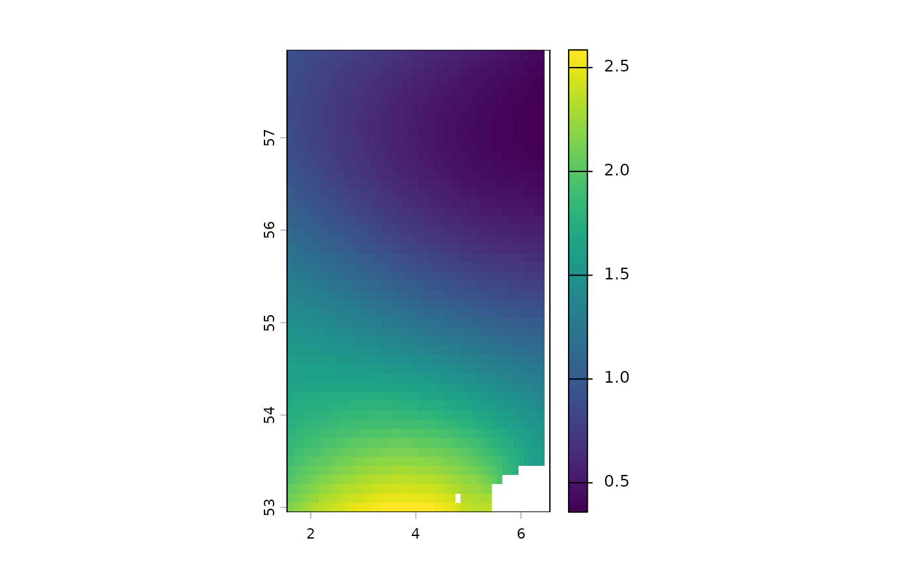
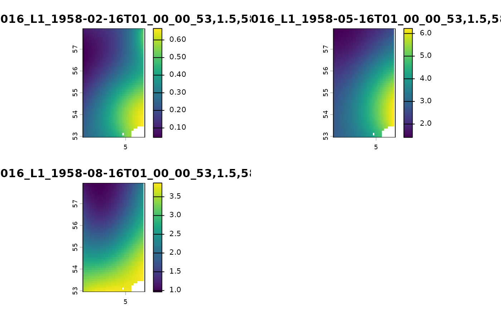

emodnet.wcs provides functionalitly for downloading coverage data
from EMODnet WCS services as <spatRaster>
class objects from the terra package. It also allows subsetting along
coverage dimensions as well as requesting specific bands for
download.
For more details on extracting metadata to inform valid subsetting of coverages, please refer to the Getting metadata about Services & Coverages article in the emodnet.wcs online documentation.
The first step to downloading coverages is to initiate a connection with one of the EMODnet WCS servers.
library(emodnet.wcs)
#> Loading ISO 19139 XML schemas...
#> Loading ISO 19115-3 XML schemas...
#> Loading ISO 19139 codelists...
wcs <- emdn_init_wcs_client(service = "biology")
#> ✔ WCS client created succesfully
#> ℹ Service: <https://geo.vliz.be/geoserver/Emodnetbio/wcs>
#> ℹ Service: "2.0.1"You can get a list of available coverages from the service with
emdn_get_coverage_ids()
coverage_ids <- emdn_get_coverage_ids(wcs)
coverage_ids
#> [1] "Emodnetbio__ratio_large_to_small_19582016_L1_err"
#> [2] "Emodnetbio__aca_spp_19582016_L1"
#> [3] "Emodnetbio__cal_fin_19582016_L1_err"
#> [4] "Emodnetbio__cal_hel_19582016_L1_err"
#> [5] "Emodnetbio__met_luc_19582016_L1_err"
#> [6] "Emodnetbio__oit_spp_19582016_L1_err"
#> [7] "Emodnetbio__tem_lon_19582016_L1_err"
#> [8] "Emodnetbio__chli_19582016_L1_err"
#> [9] "Emodnetbio__tot_lar_19582016_L1_err"
#> [10] "Emodnetbio__tot_sma_19582016_L1_err"Let’s focus on the Emodnetbio__aca_spp_19582016_L1.
coverage_id <- "Emodnetbio__aca_spp_19582016_L1"
coverage_id
#> [1] "Emodnetbio__aca_spp_19582016_L1"Subset using a bounding box
While downloading full coverages for most services will work, it may take a long time depending on the size of the coverage so it’s often a good idea to focus on areas of interest and use bounding boxes to subset requests.
Warning!
While most coverages can be downloaded in full, the coverages from the
"bathymetry" service in particular are 100GB in size and
full download will not be permitted by the server so spatial subsetting
must be used with the services. Otherwise the request
will return a curl error (most likely
curl: (92) HTTP/2 stream 0 was not closed cleanly: INTERNAL_ERROR (err 2)).
Note that, in the near future, it will be possible to download larger
boxes than what the WCS can currently handle, but this will still be
capped at 2 GB.
If you need to download the full EMODnet Digital Bathymetry (DTM), you will have to download it tile by tile from https://portal.emodnet-bathymetry.eu/
So let’s also create a subsetting bbox of an area of
interest, the southern North Sea.
We can first check the bounding box of the full coverage to ensure the subset bounding box lies within. Note that this bounding box is approximate and might overestimate the actual coverage.
cov_summary <- emdn_get_coverage_summaries(
wcs,
coverage_id
)[[1]]
emdn_get_bbox(cov_summary)
#> xmin ymin xmax ymax
#> -75.05 34.95 20.05 75.05We can then create a bounding ensuring it lies within the coverage’s bounding box.
bbox <- c(xmin = 1.5, ymin = 53, xmax = 6.5, ymax = 58)Now we are ready to download the coverage and provide the bounding
box we created to the bbox argument.
cov_1 <- emdn_get_coverage(wcs, coverage_id = coverage_id, bbox = bbox)
#> Loading required package: sf
#> Linking to GEOS 3.12.1, GDAL 3.8.4, PROJ 9.4.0; sf_use_s2() is FALSE
#> No encoding supplied: defaulting to UTF-8.
#> ── Downloading coverage "Emodnetbio__aca_spp_19582016_L1" ──────────────────────
#> <GMLEnvelope>
#> ....|-- lowerCorner: 53 1.5 "1958-02-16T01:00:00"
#> ....|-- upperCorner: 58 6.5 "2016-11-16T01:00:00"
#> ✔ Coverage "Emodnetbio__aca_spp_19582016_L1" downloaded succesfully as a
#> terra <SpatRaster> .
cov_1
#> class : SpatRaster
#> size : 50, 50, 1 (nrow, ncol, nlyr)
#> resolution : 0.1, 0.1 (x, y)
#> extent : 1.55, 6.55, 52.95, 57.95 (xmin, xmax, ymin, ymax)
#> coord. ref. : lon/lat WGS 84 (EPSG:4326)
#> source : Emodnetbio__aca_spp_19582016_L1_2016-11-16T01_00_00_53,1.5,58,6.5.tif
#> name : Emodnetbio__aca_spp_19582016_L~6-11-16T01_00_00_53,1.5,58,6.5
terra::plot(cov_1)
The raster returned from the server includes the nil value (which
technically encodes NA) as a number.
You can access nil values for each band from a summary
object using emdn_get_band_nil_values()
emdn_get_band_nil_values(cov_summary)
#> relative_abundance
#> 9.96921e+36If you wish to encode nil values as NA during coverage
download, you can use the nil_values_as_na argument.
cov_nil_to_na <- emdn_get_coverage(
wcs,
coverage_id = coverage_id,
bbox = bbox,
nil_values_as_na = TRUE
)
#> ── Downloading coverage "Emodnetbio__aca_spp_19582016_L1" ──────────────────────
#> <GMLEnvelope>
#> ....|-- lowerCorner: 53 1.5 "1958-02-16T01:00:00"
#> ....|-- upperCorner: 58 6.5 "2016-11-16T01:00:00"
#> ✔ Coverage "Emodnetbio__aca_spp_19582016_L1" downloaded succesfully as a
#> terra <SpatRaster> .
#> ✔ nil values 9.96920996838687e+36 converted to NA on all bands.
cov_nil_to_na
#> class : SpatRaster
#> size : 50, 50, 1 (nrow, ncol, nlyr)
#> resolution : 0.1, 0.1 (x, y)
#> extent : 1.55, 6.55, 52.95, 57.95 (xmin, xmax, ymin, ymax)
#> coord. ref. : lon/lat WGS 84 (EPSG:4326)
#> source(s) : memory
#> varname : Emodnetbio__aca_spp_19582016_L1_2016-11-16T01_00_00_53,1.5,58,6.5
#> name : Emodnetbio__aca_spp_19582016_L~6-11-16T01_00_00_53,1.5,58,6.5
#> min value : 0.3589122
#> max value : 2.5854254Now, nil values are encoded as NA and if there are such
nil values, plotting is much more informative as the range of values
within the raster is now constrained to valid values of interest.
Subset using a bounding box and specific timepoints
If a coverage has additional dimensions to the two geographic ones (x/long & y/lat) then the last point on that dimension is always returned if none are specified through the request.
Coverage Emodnetbio__aca_spp_19582016_L1 indeed has a temporal extent:
emdn_get_dimension_types(cov_summary)
#> [1] "geographic" "geographic" "temporal"so our previous request returned only the last timepoint of the coverage:
However we can request specific timepoints. First, let’s get a list of all available timepoints.
temp_coefs <- emdn_get_coverage_dim_coefs(
wcs = wcs,
coverage_ids = coverage_id,
type = "temporal"
)Next, let’s select the first 3 available timepoints.
timepoints <- head(temp_coefs[[1]], 3)
timepoints
#> [1] "1958-02-16T01:00:00" "1958-05-16T01:00:00" "1958-08-16T01:00:00"We can request the specific timepoints by supplying our vector of
timepoints to the time argument.
cov_2 <- emdn_get_coverage(
wcs,
coverage_id = coverage_id,
bbox = bbox,
time = timepoints,
nil_values_as_na = TRUE
)
#> ── Downloading coverage "Emodnetbio__aca_spp_19582016_L1" ──────────────────────
#> <GMLEnvelope>
#> ....|-- lowerCorner: 53 1.5 "1958-02-16T01:00:00"
#> ....|-- upperCorner: 58 6.5 "2016-11-16T01:00:00"<GMLEnvelope>
#> ....|-- lowerCorner: 53 1.5 "1958-02-16T01:00:00"
#> ....|-- upperCorner: 58 6.5 "2016-11-16T01:00:00"<GMLEnvelope>
#> ....|-- lowerCorner: 53 1.5 "1958-02-16T01:00:00"
#> ....|-- upperCorner: 58 6.5 "2016-11-16T01:00:00"
#> ✔ Coverage "Emodnetbio__aca_spp_19582016_L1" downloaded succesfully as a
#> terra <SpatRaster> Stack.
#> ✔ nil values 9.96920996838687e+36 converted to NA on all bands.
cov_2
#> class : SpatRaster
#> size : 50, 50, 3 (nrow, ncol, nlyr)
#> resolution : 0.1, 0.1 (x, y)
#> extent : 1.55, 6.55, 52.95, 57.95 (xmin, xmax, ymin, ymax)
#> coord. ref. : lon/lat WGS 84 (EPSG:4326)
#> source(s) : memory
#> names : Emodnetbio~1.5,58,6.5, Emodnetbio~1.5,58,6.5, Emodnetbio~1.5,58,6.5
#> min values : 0.04643106, 1.409593, 0.9628803
#> max values : 0.66525388, 6.222499, 3.8682909Note that this returns a <SpatRaster> Stack
instead of a single <SpatRaster>.
terra::plot(cov_2)
A similar approach is used for specifying points in the vertical
dimension, using the elevation argument where
appropriate.
Subset a specific band
We can also request specific bands from a coverage.
First let’s check the available bands in our coverage.
emdn_get_band_descriptions(cov_summary)
#> [1] "relative_abundance"
#> attr(,"uom")
#> [1] "W.m-2.Sr-1"To download a specific band we use the rangesubset
argument:
emdn_get_coverage(
wcs,
coverage_id = coverage_id,
bbox = bbox,
rangesubset = "Relative error",
nil_values_as_na = TRUE
) |>
terra::plot()Specify an output filename
When downloading data, underlying package ows4R uses the
in-built WCSCoverageFilenameHandler()
function for generating appropriate filenames from the parameters
supplied to the request.
However, it is possible to override this as well as the location the
file is written to by supplying a file path to the filename
argument.
emdn_get_coverage(
wcs,
coverage_id = coverage_id,
bbox = bbox,
rangesubset = "relative_abundance",
filename = "relative_abundance.tif"
)
#> ── Downloading coverage "Emodnetbio__aca_spp_19582016_L1" ──────────────────────
#> <GMLEnvelope>
#> ....|-- lowerCorner: 53 1.5 "1958-02-16T01:00:00"
#> ....|-- upperCorner: 58 6.5 "2016-11-16T01:00:00"
#> ✔ Coverage "Emodnetbio__aca_spp_19582016_L1" downloaded succesfully as a
#> terra <SpatRaster> .
#> class : SpatRaster
#> size : 50, 50, 1 (nrow, ncol, nlyr)
#> resolution : 0.1, 0.1 (x, y)
#> extent : 1.55, 6.55, 52.95, 57.95 (xmin, xmax, ymin, ymax)
#> coord. ref. : lon/lat WGS 84 (EPSG:4326)
#> source : relative_abundance.tif
#> name : relative_abundance